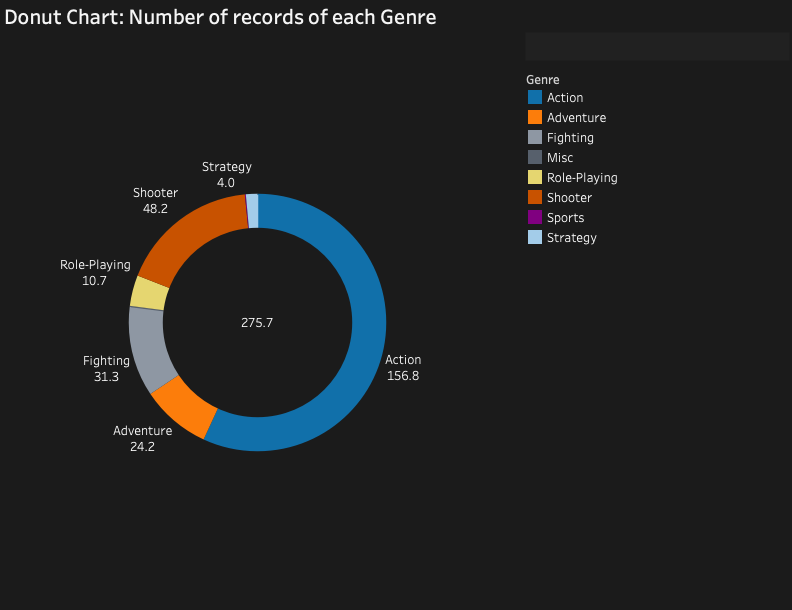
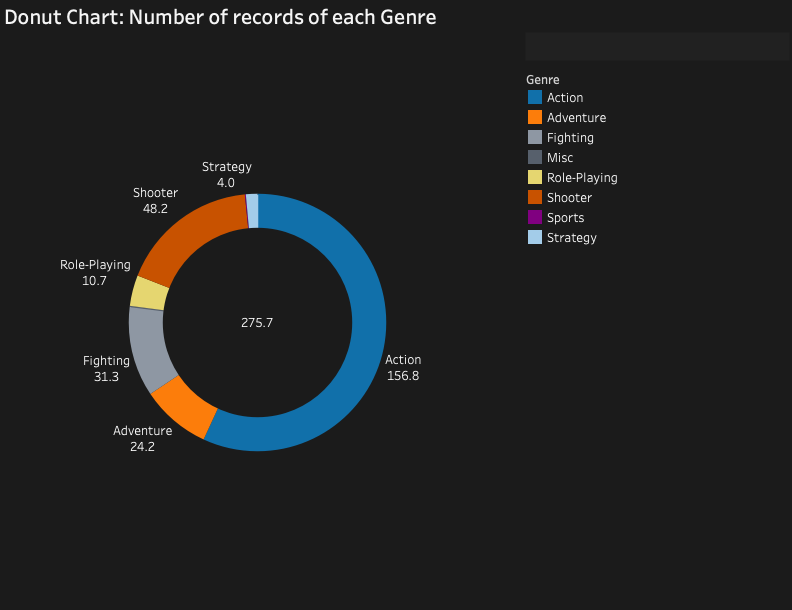
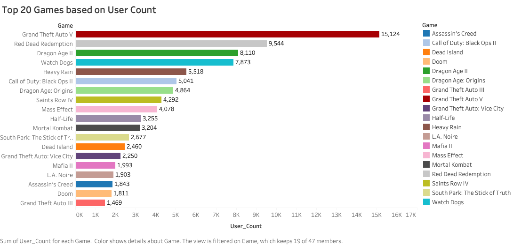
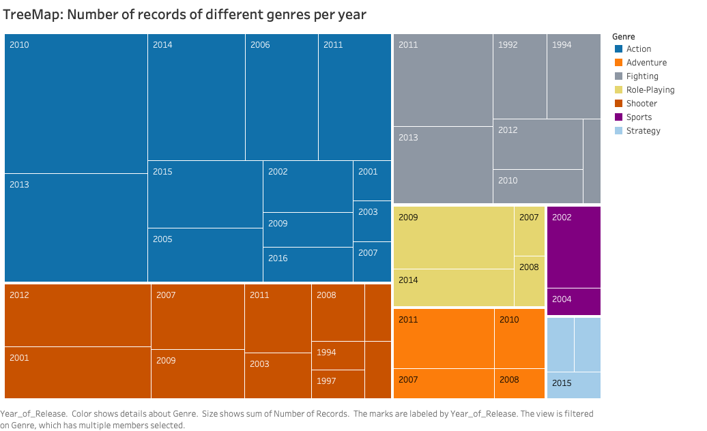
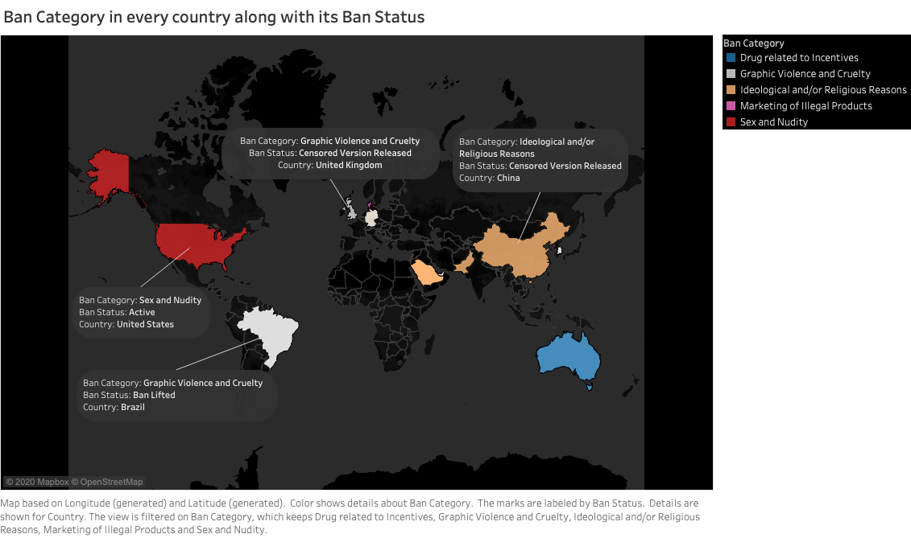
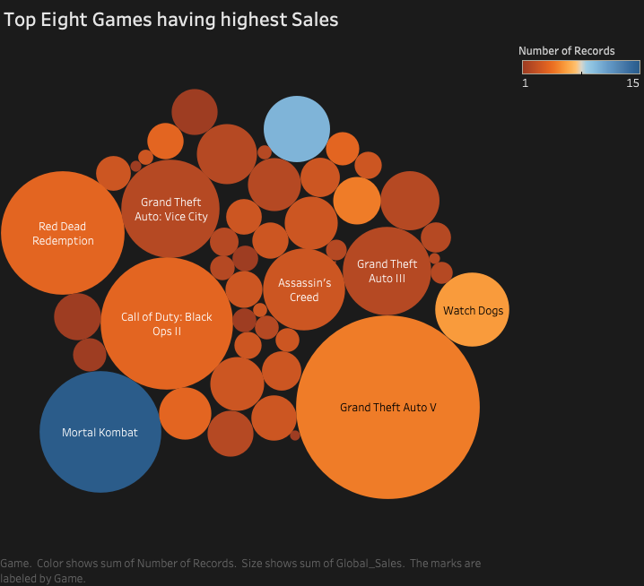
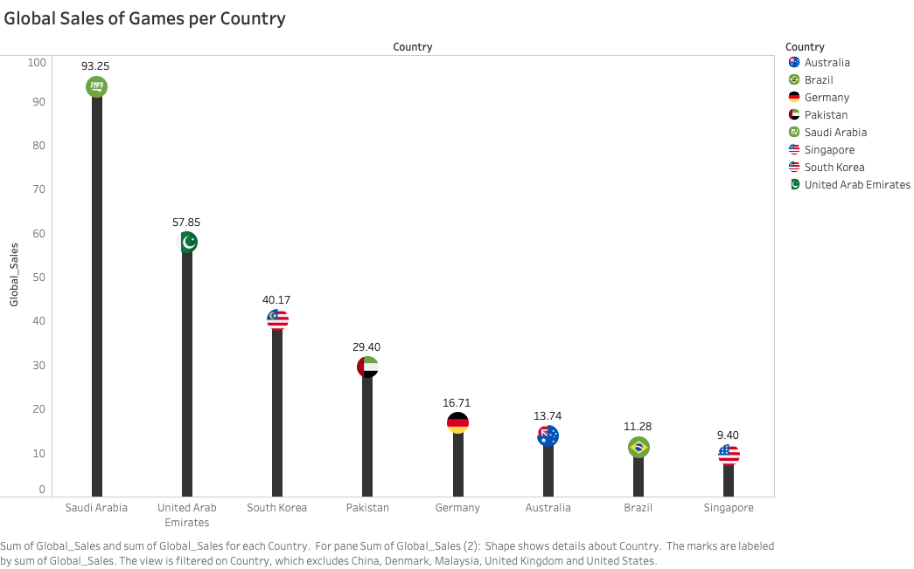
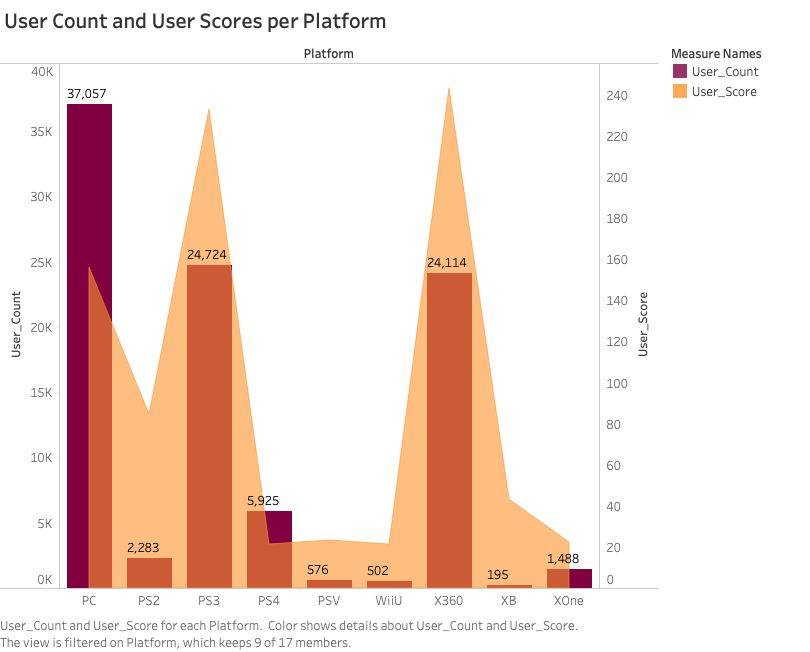
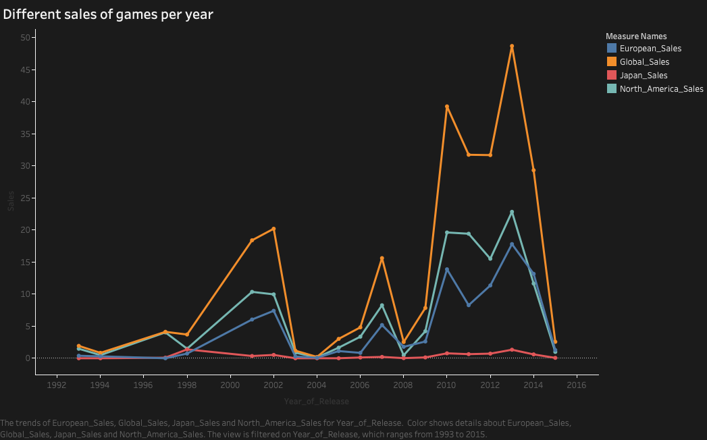
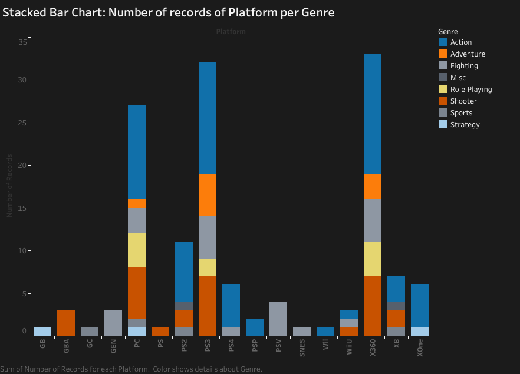

Q1

This donut chart helps understand which genre of game is played the most.
The Dataset is 'Video Game Sales'. This dataset is extremely comprehensive demographic about the statistics of different video games from 1992 to 2016.
What is this data about? Who produced this dataset? Why are you interested in it?
This dataset contains a list of video games with different sales, i.e. global sales, european sales, north america sales and japan sales, along with banned category of each game. I have joined two different datasets using Trifacta, in order to understand the relationship of sales and games banned in each country.
The data is available online at: https://gist.github.com/f3c8730c887f0597c310e9f9146ff622.git
Q1

This donut chart helps understand which genre of game is played the most.
Q2

Based on the sum of user counts, these are the top 20 games. That is, is graph helps us understand which game is played the most.
Q3

By the help of this TreeMap we can instantly look and understand which genre was most played from 1992 till 2016. Each color is used to distinguish the various game genres.
Q4

This visualization shows in countries having different ban category. It also represents the current ban status on the games.
Q5

The top eight games having the highest sales are represented in this packed bubble chart. Since the biggest bubble is of Grand Theft Auto V, it shows that GTA V has had the highest global sales.
Q6

This lollipop chart shows how much sales are in each country. I have excluded China, Denmark, Malaysia, United Kingdom and United States as there global sales were less than 9.
Q7

This visualization has four graph. First one is about the sales of various platforms in Europe per year, second one is Global sales of various platforms per year, third is sales of various platforms in Japan per year, and fourth is sales of various platforms in North America per year.
Q8

User count and user score per platform is analysed in this graph. This helps understand how popularly is the platform, and which platform is most preferred by the users.
Q9

By the help of this visulization we can understand the sales in various parts and compare that with the global sales. Further by analysing this graph we can understand that the sales of video games is very low in Japan as compared to North America.
Q10

This visualization depicts about various genres played in different platforms. Darker the color, more number of records of that particular genre.
Different visulizations of the Video Game Sales dataset helped understand a lot about the data, for instance it depicted which game is most popular and most played, sales of different games in various platforms, which genre is most played, and which games were banned in different countries. By combining, cleaning, wrangling and processing the two datasets, namely video games sales and banned video games, helped to get consistent visualizations.